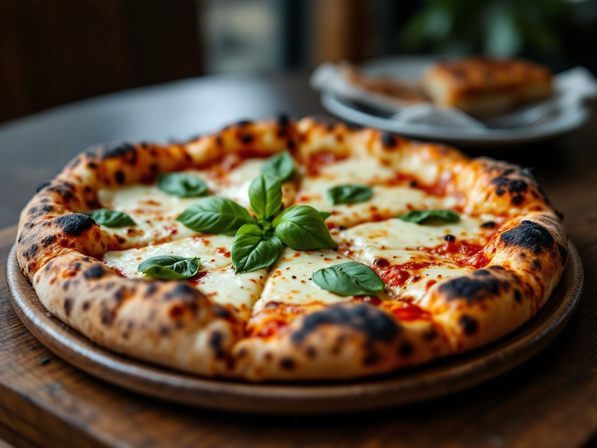

01 — la cottura a legna
Pizza
Impasto a lunga lievitazione, cornicione alveolato e bruciato al punto giusto. Napoletana vera, dal forno a legna.
MargheritaPomodoro, fiordilatte, basilico7,50 €
DiavolaSalame piccante, fiordilatte9,00 €
ScoglioFrutti di mare, pomodoro, aglio13,50 €